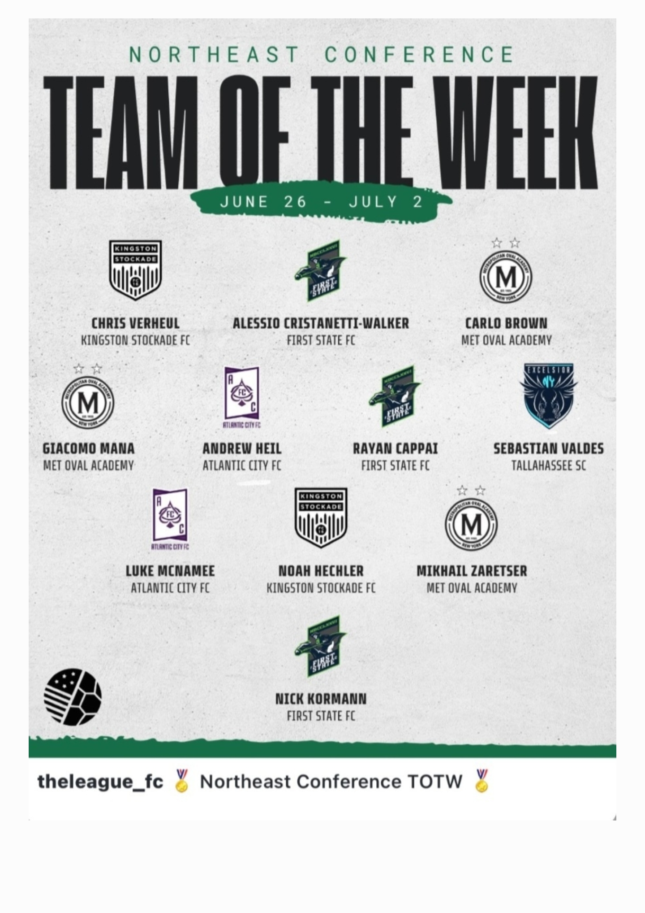

French youth level
U17 National · U19 NationalBased in France · Available for club trials
Official player recruitment profile
Rayan
Cappai
2006 French Central Midfielder · 6 / 8 / 10
French National youth background, U.S. college experience and recent competitive footage with First State FC. A concise profile built for coaches, scouts and sporting directors.
- Position
- 6 / 8 / 10
- Preferred foot
- Right
- Height
- 1.82 m
- Weight
- 77 kg
Most recent competitionFirst State FC · Summer 2026
Verified recognitionConference Team of the Week

Recruiter snapshot
The essentials, immediately.
Verified information for a fast first review. Detailed context and full-match evidence follow below.
U.S. college experience
William Penn UniversityRecent club experience
First State FC · Summer 2026Competition
The League for ClubsRecognition
Northeast Conference TOTWCurrent status
France · Available for trialsCoach video review
Highlights first. Full match second.
A simple review sequence: use the highlights for the first screening, then the full match to assess positioning, decisions, tempo and work rate.
 First screening
First screening
Highlights · 2026
Rayan Cappai · Highlights 2026
A concise overview of technical actions, movement and midfield involvement.
Watch highlights #27
#27
Full match · June 20, 2026
FC Monmouth vs First State FC
Rayan wears number 27. Use this match for an unedited evaluation of his role and decisions.
Watch full match01Scanning & positioning
02Tempo & decision-making
03Defensive work rate
04Role flexibility · 6 / 8 / 10
Football background
A clear pathway across France and the U.S.
-
France · Youth pathway
U17 National · U19 National
Development in French National youth competition.
-
United States · College experience
William Penn University
Experience in a U.S. university football environment.
-
Summer 2026 · Recent competition
First State FC
The League for Clubs, Northeast Conference. Recent match footage available.

Verified recognition
The League for Clubs · Northeast Conference Team of the Week
Selected for the June 26 – July 2, 2026 Team of the Week with First State FC.
View the source publicationRecent action
Match context, not studio poses.
Recent competitive images with First State FC during Summer 2026.

Sport CV
One-page CV. Three languages.
The Sport CV matches the information on this profile and includes direct links to both videos.
- Current status and recent experience
- Player profile and role flexibility
- Highlights, full match and direct contact
Updated July 2026
Direct contact
Interested in evaluating Rayan?
For a club trial, staff evaluation or a request for supporting documents, contact Rayan directly. Please include the club, level and proposed dates.